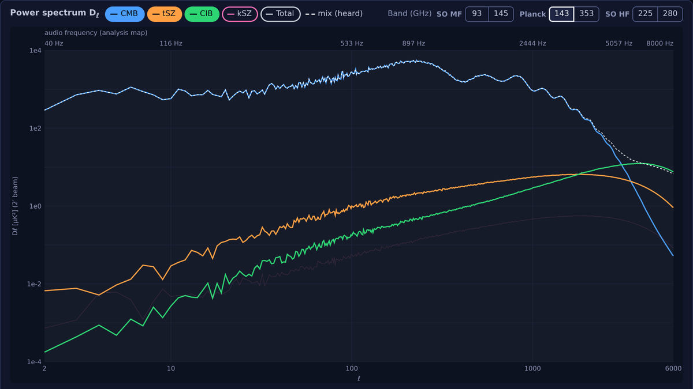
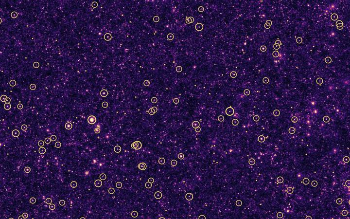
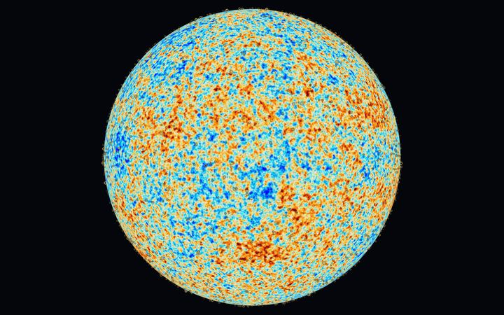
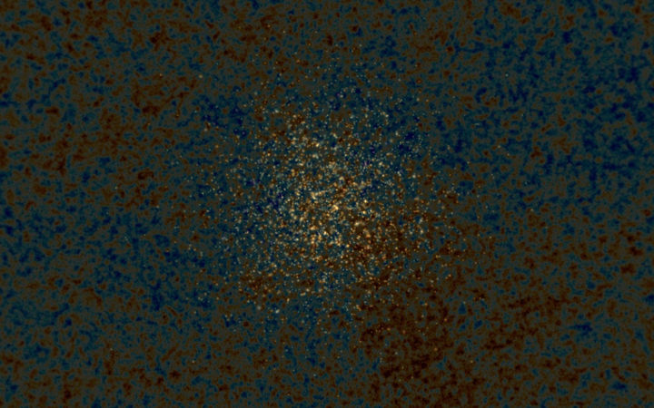

Power Spectrum Sonifier
Hear the CMB, tSZ, CIB and kSZ power spectra in six bands. Sweep the scales, mix components, hear correlations as harmony, render reproducible WAV files.
Hear and explore the microwave sky of the HalfDome simulations: the Big Bang’s afterglow (CMB), hot and moving gas in galaxy clusters (tSZ, kSZ) and dusty galaxies (CIB).
Headphones recommended; start at a low volume.

Hear the CMB, tSZ, CIB and kSZ power spectra in six bands. Sweep the scales, mix components, hear correlations as harmony, render reproducible WAV files.

Pan and zoom a full-sky map; click or scan to hear the sky under the cursor, one voice per component, and the clusters.

The same sky on a globe you can spin and zoom; click or scan any direction to hear it in 3D audio.

Stand at the observer: clusters at their comoving distances inside the CMB shell, to scale. Look around, fly through, click to listen.
Each opens its page set up as in the paper: the first five the Sonifier, the last the Sky Explorer. Nothing plays until you press; the page shows what to do.